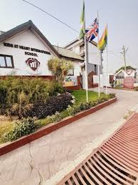

My name is Marvin Nungtaa Dakorah and im excited to share my story.I am 12.I'm from Kalsegra in the Upper West Region of Ghana. The name of my father is Boniface Dakorah and my mother is called Irene Kanyi. I also have a younger brother and his name is Morgan Delimwin Dakorah. I attend Kids At Heart International School. My favourite is hobby is to play football and I hope to become a footballer in the future. I am dark in complexion. I love to eat so many foods but my favourite of them all is Fried Rice and Chicken. My dream university is the Mancester University in England,Europe. I also have interests for other things like basketball,reading story books,coding,taekwondo,playing video games or playstation and also music. My musician is Justin Bieber. My favourite football team Mancester City. Also my favourite player is Cristiano Ronaldo Dos Santos Aveiro.Thank you very much for listening about myself.There is still alot more but I decided to write up to this. Goodbye and see you next time.
Hello!Im coming to write about my school life over here. The name of my school is called Kids At Heart International School. Its located at North Legon in Accra,Ghana. The name of the principal of Kids At Heart International School is called Mrs.Owusu and the Administrator is called Mrs.Gyarte. My school,Kids At Heart International school uses the British Curriculum to teach instead of the GES because the British System is better than the GES. Foriegners come to Kids At Heart International School when they travel to Ghana. Kids At Heart International school has basketball court and a football pitch. They serve different variety of foods like Jollof, Fried Rice,and so many more. Our school uniform is white and grey. There are over 25 teachers teaching at Kids At Heart International School and over 100 students learning in the school. P.E days are Wednesday for those in Primary School and Thursday for those in Secondary, finally Friday for the students in Kindergaten. Thank you very much for reading my school life there was a little more I could have written but lets stick to this one
Hi! I am going to be writing my hobbies over here. I love to play football in the free time because its my most favourite for me to do in this world.I also prefer other hobbies like basketball,cleaning,singing,coding,studing,reading story books,playing video and playstation. I also prefer my own privacy sometimes. Thank you for listening to my story on my hobbies. I know it was not much but this are all my hobbies.
© 2024 Marvin Dakorah